島根県出雲市今市町87
更新日 : 2023/02/14
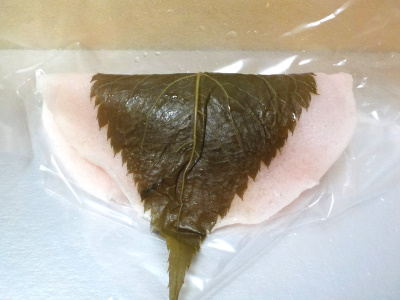
皮が薄いのが特徴的なさくら餅だと思いました。
皮が薄いので美味しい餡子がしっかり楽しめました。しっとりなめらかのこしあんはいいですね。
更新日 : 2022/10/12
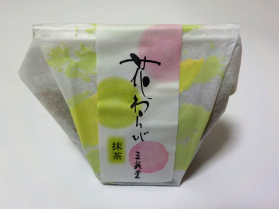
いろんなタイプのわらび餅がありますが、個包装は食べやすくていいです。
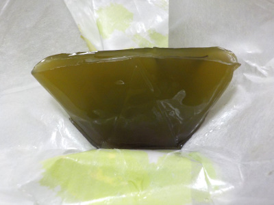
ぷるぷるのわらび餅の中にはしっとりしててなめらかなコシアンが入ってました。
スイーツで癒やされる感じがしました。
更新日 : 2021/05/09
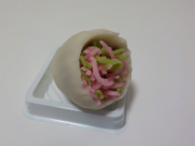
〇〇の日にはケーキが定番ですが、和菓子でもいいかなと思いました。
私はケーキにこだわる理由は特にないので、美味しいものをいろいろ食べた方がいいかな。
このカーネーションのブーケはアンがとってもなめらかでした。和菓子屋さんの200円クラスの商品は美味しいですね。
更新日 : 2018/07/16
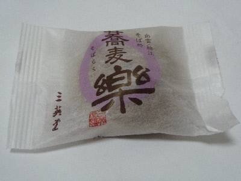
この商品はスーパーでよく見る気がする。人気があるのかな。
三英堂の蕎麦楽です。
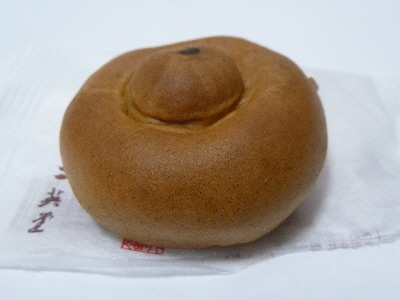
蕎麦風味の御饅頭で、中に入っているあんこが小豆の甘納豆みたいで私は好きです。
更新日 : 2017/03/08
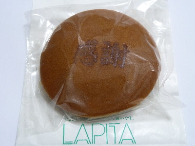
ラヒタ本店がリフレッシュオープンしましたね。三英堂さんでは感謝どらやきがお買い得になっていました。
ふわふわで軽い生地でした。キメの細かい洋菓子っぽい感じがしました。
こうゆうのもいいですね。
更新日 : 2015/08/19
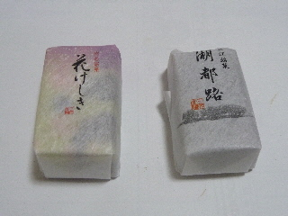
松江銘菓の花けしきと湖都路です。
小さくて長細い感じが松江銘菓っぽい感じがします。（個人的な意見です。）
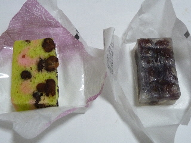
程よい甘さが良かったです。煎茶にピッタリのお菓子だなって思いました。
更新日 : 2015/08/14
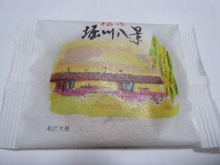
堀川八景ってあるんですね。これは松江大橋のパッケージです。
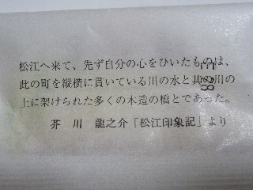
裏にはちょっとした説明があります。
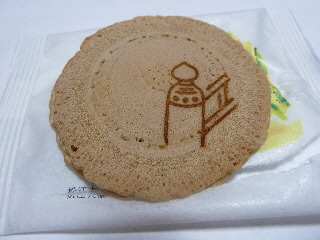
中には平べったいお菓子が入っていました。
お饅頭っぽいお菓子です。
更新日 : 2013/03/14
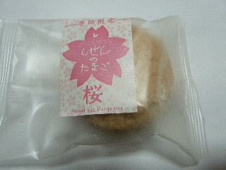
イオン出雲店で季節限定商品を見つけました。
桜のブッセです。桜いいですねー。もうすぐ季節ですね。
派手に花見するわけではないですが、なんとなく楽しみです。
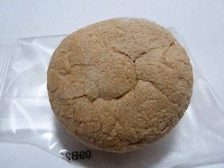
ほんのり桜味のマイルドなブッセでした。
季節感のある商品はいいですね。
2012/08/28
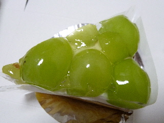
三英堂さんのシャインマスカットの乗ったケーキです。
皮付でプリッとしたシャインマスカットがものすごく甘くて美味しかったです。
いいシャインマスカット使っていますね。
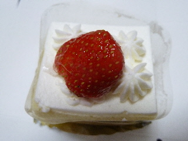
ショートケーキは小さ目で可愛かったです。
更新日 : 2012/06/23
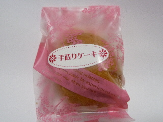
小さい個包装のケーキです。お茶にピッタリですね。
袋を開けると、茶色いケーキが出ました。なんか大判焼きみたいですね。大判焼きだと思うと中にアンやクリームを期待しちゃうんですが、ケーキなので何も入っていませんでした。
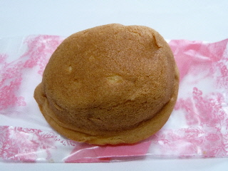
食べてみると美味しい甘いケーキでした。なんか意外です。
普通のケーキより美味しい気がしました。
更新日 : 2012/06/02
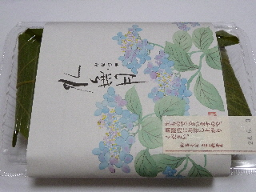
包装がお洒落でいいですね。
和菓子は季節感がある方がいいですよね。
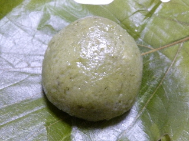
柏餅はヨモギが多いみたいで、とっても濃い緑色をしていました。
お餅の中には、しっとりとしてやわらかい餡が入ってて美味しかったです。
夏菓子のようでした。暑い時でも美味しくいただけそうです。
更新日 : 2011/09/02
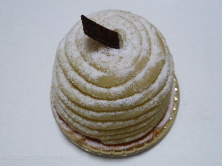
ラピタ本店内の三栄堂さんで買ったモンブランです。
カチッとしてて、ちょっとハードめなモンブランでした。甘さが詰まってる感じでしょうか。
クリーム少な目な感じで、和菓子の様な感じがしました。
更新日 : 2011/07/29
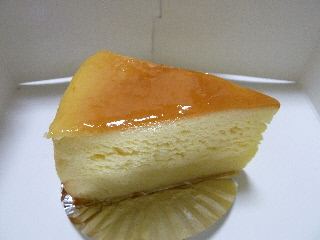
出雲市のラピタ本店内にある三栄堂で買ったチーズケーキです。
和菓子屋さんてなめちゃいけないですね。なかなか美味しかったです。
上半分はチーズの味がしっかりあって濃いめの味で、下半分はキメの細かいスポンジケーキでした。しっとりしてて甘くて良かったです。
更新日 : 2009/12/8
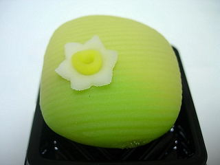
お花の付いたかわいい練りきりの和菓子です。名前は分かりません。
練りきりですが、中はしっとりとしたコシアンが入っていて水羊羹風な味がしました。
甘過ぎず、いい味でした。
和菓子って小さいの1個で満足出来ていいですね。しかもちょっとヘルシー。
更新日 : 2008/1/6
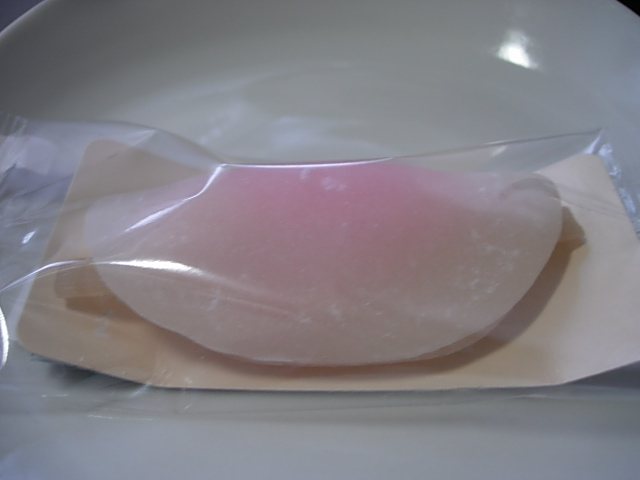
花びら餅っていうとごぼうの味が一番印象に残る商品なんですが、ここのはゴボウのクセが少なくて食べやすかったです。
ゴボウの土っぽさとか、繊維質とか、ゴボウ自体の味が弱めで、お菓子として美味しかったです。
私はゴボウ味が強いと、お菓子と野菜を一緒に食べてる様な複雑な気分になってしまうので、この商品は好きな味でした。
2005/10/18
色んな所にある三英堂の松韻を食べました。(買ったのはラピタ本店です。)
小さい箱に小さい和菓子が6個入った商品で、箱には「島根県の県木黒松を主題にして...」って書いてありました。
地元をイメージした商品って言われるとお土産っぽいですね。
ちょっとドライな粒餡の上に求肥がのってて、その上に胡麻がかかってます。
餡と求肥の組み合わせはよく和菓子にあるので普通な感じですが、上に乗ってる胡麻にヒットすると胡麻油の風味が口の中に広がり不思議な味がします。そんな感じが「黒松」なんでしょうか？松の油ってありましたもんね。
2005/08/26
松江市寺町の三英堂（出雲市のラピタ本店内にもあります）の豆どらとマドレーヌを食べました。
豆どらは、ふんわりとしていてちょっとしっとり感のあるスポンジの中にはあっさりとした餡がが入ってました。
ほんのり卵味スポンジとやさいい餡で、とってもマ～イ～ル～ド～な味でした。
マドレーヌはドライな感じで、油っこくないものでした。
油っこくないぶん味が薄くなりそうなんですが、その分マドレーヌ自体の密度が濃くなってて、カチっとした感じに作ってあったので、味が物足りないって事はありませんでした。これはこれでいいバランスに出来てますね。
【おいしいものを食べよう。】【たくさん寝よう。】
【ソロ活をしよう!】【季節感のあることをしよう。】【動画視聴はほどほどに。】【当サイトの全てのコンテンツは無断転載禁止です。】